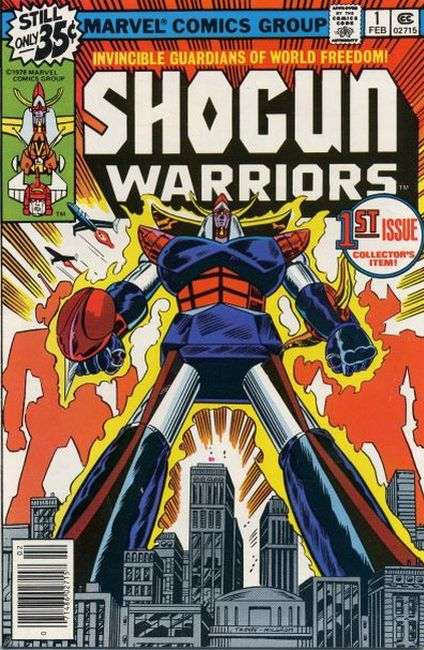

The Shogun Warriors were the main characters of a line of toys licensed by Mattel Inc. during the late 1970s. They were a series of imported Japanese toys based on several anime and tokusatsu shows featuring giant robots.
They were originally manufactured in three sizes: 24-inch (610 mm) plastic versions, 3.5-inch (89 mm) die-cast metal versions, and slightly taller but much more detailed 5-inch (127 mm) die-cast versions. Several vehicles were also offered, as well as a set that could be put together to form the super robot Combattra. Toward the end of production, Mattel proposed the inclusion of plastic toy vehicles for the 3.5" figures to ride in exclusively in the United States but these toys were not released for purchase.
The toys featured spring-loaded launcher weapons such as missiles, shuriken, and battle axes. Some were able to launch their fists while the later die-cast versions also had the ability to transform into different shapes. Raydeen, for example, could become a birdlike spaceship. These "convertible" versions were the precursors to the Transformers line of toy robots, but unlike Transformers, minor disassembling was usually required to transform the robots.

There was a robot named Megatron in issue #18 of the Shogun Warriors comic book series, a name subsequently used multiple times for the leader of the evil Decepticons from Transformers. Sometimes the toys were unable to transform into their second form, one example being Gaiking's "giant skull," which was the head for Daiku Maryu, a space dragon toy not released in the United States.
Several of the anime-based toys from this line of toys reappeared in the 1980s in Jim Terry's Force Five series. A single movie version was edited from each series and sold on home video. These features aired on the cable network Showtime in 1981 under the name "Shogun Warriors".
Similarly to other toy lines during the 1970s, the Shogun Warriors toys came under pressure over safety concerns regarding their spring-loaded weapons. The concern was that children might launch the weapons and hit other children or pets in the eyes. There was also a risk that small children might choke on the small plastic missiles and other parts.
Toy manufacturers then faced new regulations as a result of reported injuries received while playing with these toys. Consequently, many toy companies were forced to remodel existing toy lines with child-safe variations such as spring-loaded "action" missiles that would remain attached to the toy. Because of this, as well as declining sales, the Shogun Warrior toy line was discontinued by 1980.
The Shogun Warriors characters were licensed by Marvel Comics to create a comic book series written by Doug Moench and drawn by Herb Trimpe. The series was composed of 20 issues that were published from February 1979 to September 1980. In the comic book series, the Shogun Warriors were created by a mysterious group called the Followers of the Light, and human operators were chosen from all around the world to operate the massive robots in order to battle evil.